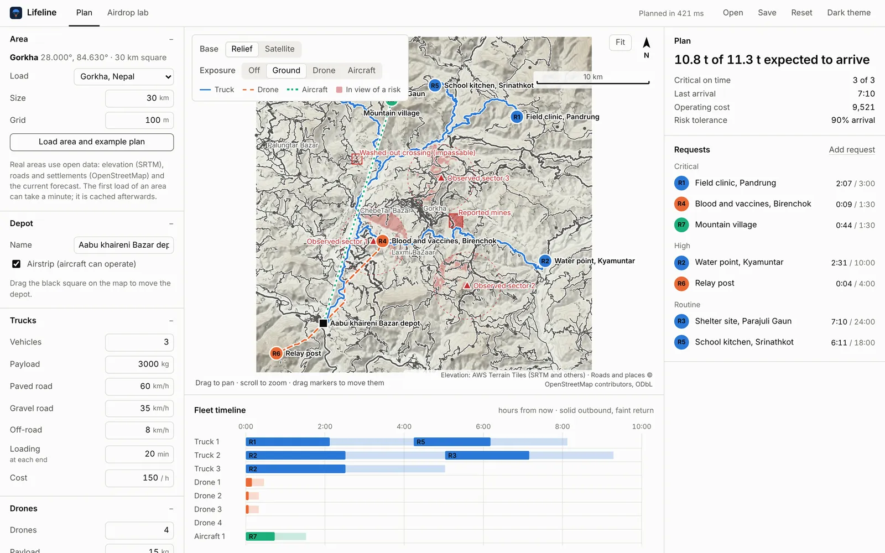
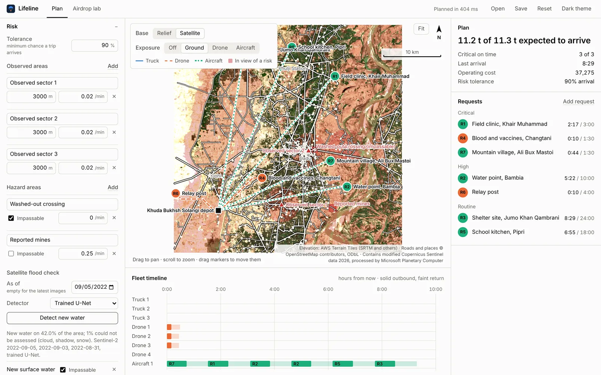
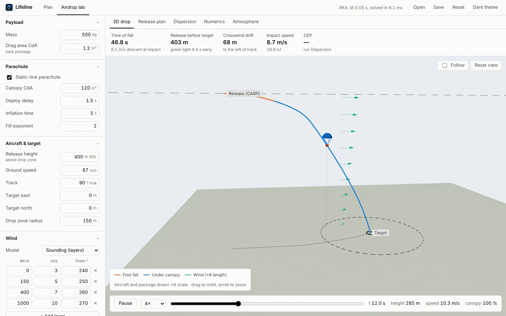
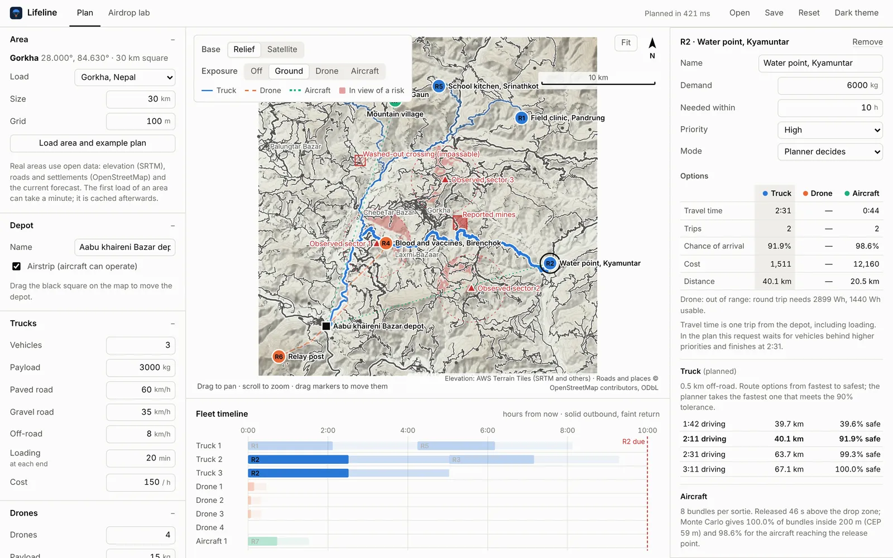
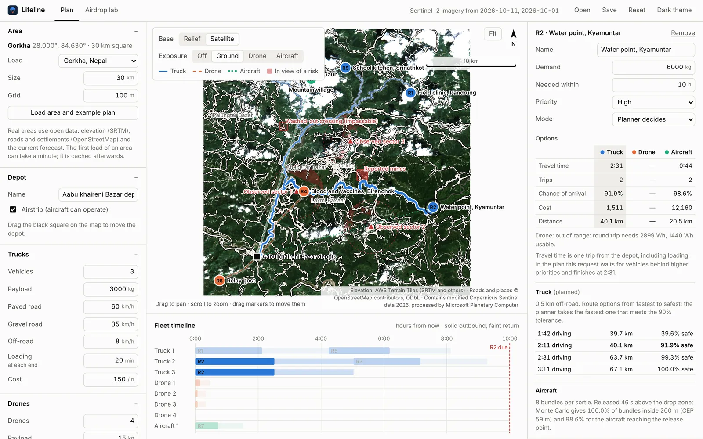

Games
Small games in Godot, from quiet places to wander around in to physics toys and a strategy prototype.
Godot, GDScript
I build the software I wish existed. Right now that’s Lifeline, which works out how to get supplies to places the roads no longer reach: by truck, by drone or by parachute.
A desktop planner for disaster response. Pick a place and it loads the real terrain, roads and wind forecast, compares truck, drone and airdrop for every request, and writes a schedule a planner can defend.
Rust engine, Tauri desktop app and a command line. Free for Windows, macOS and Linux, MIT licence, no account or telemetry.

Every request gets a truck, a drone and an airdrop option, each with its time, number of trips, chance of arriving intact and cost. The scheduler serves requests by priority and deadline, and takes the cheapest option that is safe enough and on time. If none is, it takes the earliest, then the safest. It’s a rule a person can follow and argue with, not a black box.
Danger is part of the terrain model. Mark a checkpoint or hostile position and Lifeline works out what it can see from the ground, at drone height and at drop height, and routes around it.
| Path | Limited by | |
|---|---|---|
| Truck | OpenStreetMap roads, off-road legs where no road reaches | Road class, gradient, closed roads |
| Drone | Straight or detoured flight over the terrain | Battery, wind, radio line of sight |
| Airdrop | Aircraft track to a computed release point | Wind, release timing, drop zone size |




Lifeline reads a month of Sentinel-2 images, decides which pixels are water and subtracts the water that is always there. What’s left is new water, and trucks can’t cross it.
A small U-Net I trained on hand-labelled flood scenes runs on the device through ONNX. On scenes it never saw, it beats the standard water index, and it holds up in a region it wasn’t trained on.
| Detector | Test set | Bolivia, unseen |
|---|---|---|
| Water index | 0.728 | 0.611 |
| Water index, tuned | 0.787 | 0.703 |
| U-Net | 0.858 | 0.811 |
The default Gorkha scenario has seven requests, three observed areas over the paved roads, a washed-out crossing and the live wind forecast. Planning it takes well under a second.
$ lifeline plan -s gorkha.json
id request kg priority mode trips arrives due P(arrive)
R1 Field clinic, Pandrung 350 critical Truck 1 2:07 3:00 99.3%
R2 Water point, Kyamuntar 6000 high Truck 2 2:31 10:00 91.9%
R3 Shelter site, Parajuli Gaun 2500 routine Truck 1 7:10 24:00 99.3%
R4 Blood and vaccines, Birenchok 12 critical Drone 1 0:09 1:30 99.8%
R5 School kitchen, Srinathkot 900 routine Truck 1 6:11 18:00 99.3%
R6 Relay post 25 high Drone 2 0:04 4:00 100.0%
R7 Mountain village 1500 critical Aircraft 1 0:44 1:30 99.2%
expected delivered 10764 of 11287 kg (10764 kg on time), critical on time 3/3, last arrival 7:10, cost 9520Under it: drone power from momentum theory, parachute descent integrated with RK4 through the standard atmosphere, risk-weighted routing over the road graph, and 76 tests that check the physics against exact solutions.
What I make between Lifeline releases. Some are finished, most are how I learn something new.
Small games in Godot, from quiet places to wander around in to physics toys and a strategy prototype.
Godot, GDScript
Desktop and command-line tools I wanted for myself. If I do a chore twice, I usually end up writing the program that does it.
Rust, TypeScript, Tauri
Sites for my own projects and for people I know. Mostly hand-written HTML and CSS that loads fast.
HTML, CSS, JavaScript, Vercel
Taking apps, file formats and web APIs apart to see how they really work, then rebuilding the parts I need.
Whatever the target was built with
If you work in disaster response or logistics and want to try Lifeline on a real area, or you just want to build something together, write to me.